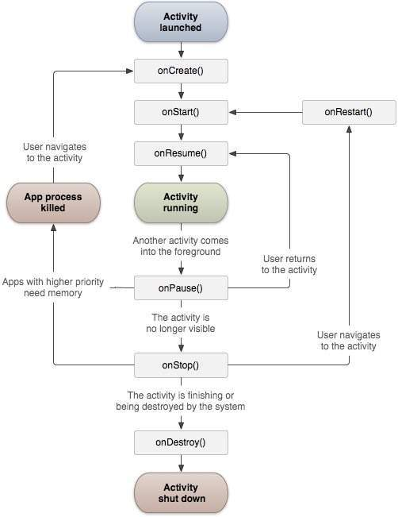

Quest’anno il macro-argomento che abbiamo affrontato è stato Android, sia dal punto di vista teorico che pratico, con lo sviluppo di applicazioni. Android è un sistema operativo basato sul kernel Linux, inizialmente sviluppato da una startup omonima e poi acquistato da Google nel 2005. Le sue caratteristiche principali, tra cui leggerezza, praticità e il fatto di essere open-source, lo rendono oggi il sistema operativo mobile più diffuso al mondo. Abbiamo studiato la sua architettura a strati, dove ogni livello ha una funzione specifica: lo strato più basso interagisce con l’hardware, mentre quello più alto si interfaccia con l’utente.

- Linux Kernel: contiene i driver fondamentali per gestire e far comunicare l’hardware del dispositivo.
- Librerie: include librerie C/C++ per la gestione di dati e media, come SQLite per database locali e il Media-Framework per la gestione di audio e video.
-
Android Runtime: contiene le core-libraries Java e la Dalvik Virtual Machine (DVM), un compilatore just in time che elabora codice Java durante l’esecuzione.
A differenza della JVM classica del PC, qui si usa il bytecode .dex e l’eseguibile finale è un
.apk, l’equivalente del.jar.
-
App Framework: fornisce le API e i componenti fondamentali per sviluppare un’app, come la gestione delle Activity (le schermate interattive dell’app).
Ogni activity ha dei metodi specifici legati al ciclo di vita, ad esempio
onCreate(),onPause(),onResume().  - Application: è il livello più visibile, quello in cui l’utente interagisce con l’interfaccia e le funzionalità messe a disposizione dagli altri strati.